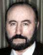

|
accomplished by directly loading the software into the mind. Then in
three weeks one will "load" a doctorate, say, in physics. In three
more weeks one will also load a doctorate in chemistry. Another three weeks, in
electrical engineering. Another three weeks, an M. D. And so on. When that
happens, then truly everyone on earth can be educated. Freedom from ignorance
may well be another great freedom that is legally recognized. There will be no
impoverished large groups lacking the education to find decent, productive jobs.
We urge all nations to use the principles involved: not for human abuse, but
for healing, educating, uplifting, and life-expanding of every person on Earth.
If we do, we shall all have a far brighter future. Then we shall check what has
started out to be the Sword of Damocles and turn it into the golden Millennium.
We are reminded of a poignant quote from Teilhard de
Chardin:
"Someday, after we have mastered the winds, the waves, the
tides and gravity, we shall harness for God the energies of love. Then for
the second time in the history of the world man will have discovered fire."
May the nations of the world utilize the new mind engineering science to
truly free all minds into a common love of, and respect for, their fellow humans
of every color, creed, and circumstance. As de Chardin envisioned, may we use
the new science to discover a new fire, burning clearer and brighter than
anything that has gone before. ♦
A B O U T T H
E A U T H O R
President and Chief Executive Officer, CTEC, Inc. Lieutenant Colonel US. Army
(Retired). MS Nuclear Engineering, Georgia Institute of Technology. BS
mathematics, Northeast Louisiana University. Graduate of Command & General
Staff College, US. Army. Graduate of Guided Missile Staff Officers Course, U. S.
Army (equivalent to MS in Aerospace Engineering). Numerous electronic warfare
and counter-countermeasures courses.
Tom is the leading advocate of scalar potential electromagnetics and the
Fogal charge-blocking semiconductor: He is involved in alternate energy devices
and scalar electromagnetic system prototypes. He has defined charge q as a
coupled system of two components, advanced a mechanism for a vacuum engine,
whereby the vacuums virtual particle flux is organized and used to energetically
shape and manipulate matter and energy, and advanced a mechanism for a Bohm-type
quantum potential, which theoretically allows the engineering of action at a
distance in physical systems.
He is president of the Association of Distinguished American Scientists
(ADAS), a life member of the Alabama Academy of Science, Emeritus member of the
American Association of Physics Teachers, and has served on the Board of
Directors of several associations and corporations. Tom is a guitarist, a
retired aikidoist (Sandan, Yoseikan style), is happily married and has two sons
and two daughters. He and his wife Doris live in Huntsville, Alabama where Tom
is retired from aerospace, continues private research, and serves as a
consultant to industry on Scalar electromagnetics processes.
R E F E R E N C E S
-
Owen Flynn, "Parametric arrays: A new concept for sonar,
"Electronic Warfare Magazine, June 1977, p. 107-112.
-
Valerie Hunt, presentation to the
U.S. Psychotronics Associations Annual
Symposium, Bergamo Center, Ohio, 1988. Hunt presented epochal work showing chaos—and
thus hidden order—in recorded ELF electromagnetic radiation from human bodies.
Hunt split the received EM signals into two identical channels, time-delayed one
channel by a very slight amount, then recombined (mixed) the nondelayed and delayed signals. The result was that
attractors precisely indicative of chaos appeared. This
positively proves that human systems produce ordered
time-structuring of EM.
-
Years ago, I read an
obscure reference to Russian research directly along that line,
with successful development of just such a portable device.
Unfortunately I lost the reference in a disastrous flood in my
basement and have been unable to recover it.
-
T. E. Bearden,
"Alteration of Materials by Wideband Multiwave Irradiation
Combined with Selective Emission
Manipulation," Invention Disclosure Document Number
|
446955,
Oct. 23, 1998, forwarded to US. Patent Office on Nov. 4, 1998.
5. A very good introduction to nonlinear phase conjugate
optics is given by David M. Pepper, "Nonlinear Optical Phase
Conjugation," Optical Engineering, 21(2), March/April 1982,
p. 156-183. Also see David M. Pepper, "Applications of
Optical Phase Conjugation," Scientific American, 254(1), Jan.
1986, p. 74-83.
6. Pepper,
Optical Engineering, ibid., p. 158.
7. See T.E. Bearden, Energetics of Free Energy Systems and
Vacuum Engine Therapies, Tara Publishing, Internet node
www.tarapublishing.com/books,July 1997. See also T.E.
Bearden, "Energetics Update and Summary, " Part I,
Explore, 7(6), 1997, p. 60-67, Part II, Explore!, 7(7), 1997, p.
53-56; Part III Explore!, 8(1), I997, p. 53-56; Part IV;
Explore!, 8(3), 1997, p. 56-63. See also T.E. Bearden,
"Vacuum Engines and Priore’s Methodology: The True Science
of Energy-Medicine: Parts I and II " Explore!, 6(1), 1995, p.
66-76; 6(2), 1995, p. 50-62.
8. E.g., see R.O. Becker; Charles H. Bachman, and Howard
Friedman, The direct current system: A link between the
environment and the organism, " New York State Journal of
Medicine, Vol. 62, April 15, 1962, p. 1169-1176. See also R.
0. Becker; "The direct current field: A primitive
control and communication system related to growth processes,
"Proceedings of the XVI International Congress of Zoology,
Washington, D.C., VOL.3, 1963, p. 179-183;—"The
neutral semiconduction control system and its interaction with
applied electrical current and magnetic fields," Proc. 1lth
International. Cong. Radiol., Amsterdam,
Excerpta Medica Foundation, 1966, Series 105, p. 1753-1759.
See particularly Robert O. Becker and David G. Murray, "The
electrical control system regulating fracture healing in
amphibians," Clinical Orthopaedics and Related Research, Vol.
TBD, No. 73, Nov.-Dec. 1970, p. 169-198.
9. Bearden, T.E., Energetics: Extensions to Physics and
Advanced Technology for Medical and Military Applications, CTEC
Proprietary, May 1, 1998, 200+ page enclosure to CTEC Letter,
"Saving the Lives of mass BW Casualties from Terrorist BW
Strikes on US. Population Centers," distributed to
selected high U.S. Government agencies and Legislative
subcommittees, May. 4, 1998.
10. E. g. , Vlail Petrovich Kaznacheyev, V.
I. Vernadsky's Study on Biosphere and NooSphere, 1989 [in
Russian]. Vernadskys concepts included living matter,
biosphere, and human-transformed biosphere (noosphere).
Kaznacheyev writes of evolution and organization of the living
matter as the biosphere of the earth. Without specifying the
exact technical details, Kaznacheyev discusses the gist of much of
what is in this present article. The present author has an
autographed copy of Kaznacheyevs book referenced above.
11. Rabichev, Lev Yakovlevich; Vladislav Fedorovich Vasiliev;
Alexandr Sergeevich Putilin; Tatyana Grigorievna Ilina; Petr
Vasilievich Raku; and Leopold Pavlovich Kernitsky, "apparatus
for the treatment of neuropsychic and somatic diseases with heat,
light, sound; and VHF electromagnetic radiation," U.S.
Patent. No. 3,773,049, Nov. 20, 1973. This is the U. S.
patent for the LIDA machine, developed by the Russians prior to
the Korean War. Additional patents or applications are as
follows: Italy, #619,129, March 1961. Germany, #1,183,607,
Dec. 1964. Great Britain, #826,766, Jan. 1960.
12. Stefan T. Possony, "Psy-War: Soviet Device
Experiment," Defense & Foreign Affairs Daily, 12(104),
June 7, 1983, p. 1-2. Reports on Dr. Ross Adey’s
investigation of the Soviet device called LIDA which is used to
bombard human brains with radio waves in the 40-MHz region.
Also reports on work by A.S. Davydov of the Ukrainian
Academy of Sciences, who discovered how the blood-brain barrier
can be penetrated by low-frequency radio waves so that brain cells
are affected. See also "Soviet device uses radio waves
as tranquilizer, " Associated Press release, Huntsville
[Alabama] Times, May 19, 1983. Dr. Ross Adey tested
the Soviet LIDA machine on a cat, and in two or three minutes the
cat was sitting quietly, almost as though transfixed, and
uninterested in its surroundings. The animal remained
uninterested in its surroundings for some 20 to 30 minutes after
the machine was turned off.
13. "KGB Used PIS to Program Soldiers, "Resonance,
No. 30, Mar. 1996, p.29. Quoting:
"During the 1970s, the Soviet KGB developed a Psychotronic
Influence System (PIS) that was used to turn people into
programmable "human weapons." Soldiers fighting
in the Afghan conflict were trained using the system which employs
a combination of high frequency radio waves and hypnosis.
Commands are activated by code words or cyphers. The purpose
of PIS was to render regular soldiers and members of the special
forces incapable of feeling sympathy.
|
|